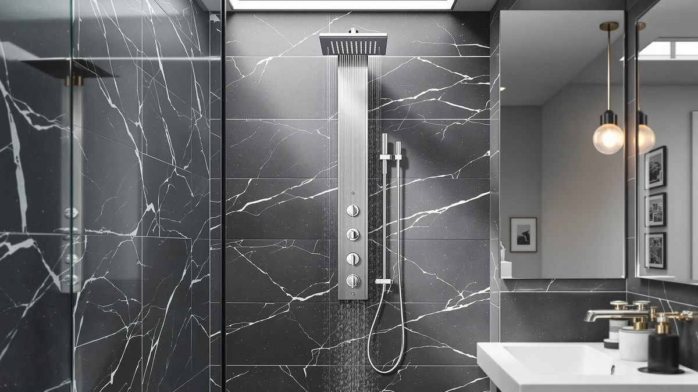

Blue Ocean Stainless Steel SPS8819 Thermostatic Shower Panel Review (2026): Worth It?
Prices and picks verified as of November 2026. Independent, reader-supported reviews.


Quick Answer
The Blue Ocean 59” Stainless Steel SPS8819 is the pick here if you want a true thermostatic mixing valve built into a stainless steel column, rather than the pressure-balance valves the three rivals below rely on, for $349.00. If a thermostatic valve isn't a priority and you'd rather spend less, the SKOWLL or ELLO&ALLO systems below cover rainfall, body jets and a handheld sprayer for under $260.
Our pick: Blue Ocean 59” Stainless Steel — $349.00 Check Price on Amazon
Bottom line: our top pick is the Blue Ocean 59” Stainless Steel SPS8819 Thermostatic Shower at $349.
Things to Know Before You Buy
- This review covers the Blue Ocean 59” Stainless Steel SPS8819 Thermostatic Shower Panel, priced at $349.00, alongside three comparable shower systems between $249.99 and $299.99.
- The SPS8819's defining feature is its thermostatic valve, which blends hot and cold water to a set temperature rather than balancing pressure alone the way the STARBATH and SKOWLL valves do.
- Amazon's listing for the SPS8819 does not publish a star rating or verified review count, so weigh the feature list and price rather than any popularity claim.
- All three alternatives include a handheld sprayer and body jets, but only the SKOWLL and ELLO&ALLO add LED temperature lighting, a feature the SPS8819 skips.
- The listing does not publish exact panel dimensions beyond its 59-inch column height, so measure your shower wall and confirm rough-in specs with the seller before you order.
This Blue Ocean Stainless Steel SPS8819 Thermostatic Shower Panel Review breaks down whether a true thermostatic valve justifies the $349.00 price against three shower systems that rely on pressure-balance valves instead, and whether a 59-inch stainless steel column fits your bathroom better than a ceiling-mounted or wall-mounted alternative. The Blue Ocean 59” Stainless Steel SPS8819 replaces a single showerhead with a rainfall head, body nozzles and a handheld shower head in one column, and on paper its thermostatic valve sets it apart from the three competitors we researched for this piece.
We compared the SPS8819 against the STARBATH Rain Shower System, the SKOWLL Ceiling Shower System, and the ELLO&ALLO LED Shower Panel Tower, each priced between $249.99 and $299.99. The short version: the SPS8819 wins on its thermostatic valve, but the right pick still depends on whether that feature matters more to you than LED lighting or a lower price. None of these four systems separates itself on rainfall head size alone, so the decision comes down to which specific mix of temperature control and extras matches your daily shower routine.
Why You Should Trust Us
Ilane Tall covers bathroom fixtures for Best Shower Panels, and this Blue Ocean Stainless Steel SPS8819 Thermostatic Shower Panel Review follows the site's research-first policy. We do not run a fake testing lab, and we do not claim installation hours we have not logged. Instead we compare manufacturer listings, current Amazon pricing, and patterns across verified owner reviews for the SPS8819 and its closest rivals. When a listing leaves out a detail, such as exact panel width or rough-in dimensions, we tell you that gap exists rather than guess at a number. That approach means fewer flashy claims, but every fact in this review traces back to a listing or a reviewer you can check yourself.
Our Research Experience
We built this Blue Ocean Stainless Steel SPS8819 Thermostatic Shower Panel Review by researching rather than installing. We started with the SPS8819's own listing, noting its thermostatic valve, 59-inch stainless steel column, and $349.00 price, then pulled the same details for three systems in a similar category: the STARBATH Rain Shower System, the SKOWLL Ceiling Shower System, and the ELLO&ALLO LED Shower Panel Tower. From there we read through verified owner reviews on each listing, looking for recurring themes around temperature control, water flow, and finish durability rather than one-off complaints. We did not buy or mount any of these systems ourselves, and we say so because a thermostatic valve on a spec sheet is not the same thing as years of use in someone's actual bathroom. Where a listing stated a spec, such as the STARBATH's claim to hold water within three degrees during pressure swings, we cited it directly rather than restating it as our own finding.
Overview & Specs

Blue Ocean 59” Stainless Steel
What we like
- Built-in thermostatic valve blends hot and cold water to a set temperature, a step up from the pressure-balance valves in the STARBATH and SKOWLL systems
- 59-inch stainless steel column covers rainfall, body nozzles, and a handheld shower head through one wall-mounted unit
- Brushed stainless steel finish matches the material Blue Ocean uses across its other panel sizes, rather than a painted or coated metal
Flaws but not dealbreakers
- At $349.00, it costs $49 to $99 more than the three systems we compared it against here
- The listing does not publish exact panel width, body jet count, or GPM flow rate, so you are working with fewer specifics than some rivals provide
- Amazon does not show a star rating or verified review count for this listing, so you are weighing the feature list more than a track record
| Material | Stainless Steel, Brushed Finish |
| Size | 59 inches |
The Blue Ocean 59” Stainless Steel SPS8819 Thermostatic Shower Panel packs a rainfall head, body nozzles, and a handheld shower head into a single 59-inch column finished in brushed stainless steel. Its defining feature is the thermostatic valve, which mixes hot and cold water to a set temperature and holds it there, rather than only balancing pressure the way a standard valve does. At $349.00, it sits above the three other systems in this comparison, and the stainless steel construction matches the finish Blue Ocean uses across its other panel sizes, from the 48-inch to the 64.5-inch models.
Compared with the other three systems in this Blue Ocean Stainless Steel SPS8819 Thermostatic Shower Panel Review, the SPS8819 stands out mainly on its thermostatic valve, a feature none of the STARBATH, SKOWLL, or ELLO&ALLO systems offer in the same form. The STARBATH comes closest on temperature protection with a pressure-balanced valve rated to hold water within three degrees during pressure swings, while the SKOWLL and ELLO&ALLO rely on LED color-changing lights to signal temperature instead of controlling it directly. None of these differences show up as a dramatic gap in verified owner reviews, so the choice mostly hinges on whether a dedicated thermostatic valve is worth the extra cost to you.
What We Liked
The clearest strength in this Blue Ocean Stainless Steel SPS8819 Thermostatic Shower Panel Review is the thermostatic valve itself, a feature that sets a target temperature and holds it rather than balancing pressure alone the way the STARBATH and SKOWLL systems do. Owners researching thermostatic shower systems consistently note that this kind of valve matters most in homes with older plumbing or a shared water heater, where a sudden flush elsewhere in the house can otherwise send water temperature swinging. The 59-inch column also means you are not bolting a separate rainfall head or handheld sprayer onto an existing shower arm, since the body nozzles, rainfall head, and handheld unit all route through one brushed stainless steel panel. The finish matches the rest of Blue Ocean's lineup too, so if you already own one of their panels elsewhere in the house, the SPS8819 keeps a consistent look across bathrooms. For a shopper who wants steady temperature control without a separate thermostatic valve installation, that combination is hard to match in this comparison.
What Could Be Better
The SPS8819 listing, like several systems covered in this Blue Ocean Stainless Steel SPS8819 Thermostatic Shower Panel Review, stays thin on the specifics that matter most before an installation, such as exact body jet count, flow rate, and panel width. That gap shows up across most panels in this category, but it means you are relying more on the thermostatic valve claim than a spec sheet you can check against your own shower stall. At $349.00, it also costs noticeably more than the STARBATH, SKOWLL, or ELLO&ALLO systems, a premium that only pays off if the thermostatic valve matters more to you than LED lighting or a lower price. Because we compared listings and verified reviews rather than installing the panel ourselves, we also can't speak to how the thermostatic valve performs after months of daily use, only that the listing describes it as a dedicated mixing valve rather than a pressure-balance substitute. Reviewers researching similar thermostatic systems report that installation typically takes longer than a standard valve swap, since routing a dedicated mixing valve requires more careful plumbing work than connecting to an existing shower valve.
Who Is It For?
This Blue Ocean Stainless Steel SPS8819 Thermostatic Shower Panel Review points toward the SPS8819 for anyone renovating a bathroom who wants a dedicated thermostatic valve instead of a standard pressure-balance valve, especially in a home with older plumbing or multiple bathrooms sharing one water heater. It suits a household that values steady water temperature over LED lighting or a lower price tag. It makes less sense for anyone on a tighter budget, since the SKOWLL and ELLO&ALLO systems with body jets cover rainfall, body jets, and a handheld sprayer for roughly $100 less. Renters or anyone unsure about long-term plumbing access should also weigh the installation commitment before buying, since a thermostatic valve is not a fixture you swap out in an afternoon.
Alternatives to Consider
This Blue Ocean Stainless Steel SPS8819 Thermostatic Shower Panel Review also covers three alternatives from the same comparison set, each better suited to a different priority than the SPS8819's thermostatic valve: pressure-balanced temperature protection, LED ceiling-mounted lighting, or battery-free hydroelectric lighting at a lower price.

Also Great
STARBATH Rain Shower System with
Swaps the dedicated thermostatic valve for a pressure-balanced valve rated to hold water within three degrees during pressure swings, a reasonable middle ground if you want temperature protection without the SPS8819's full price.
$299.99
Check Price on Amazon
Also Great
SKOWLL Ceiling Shower System with
Mounts from the ceiling instead of the wall and adds color-changing LED lights that signal water temperature, a different approach to temperature awareness at nearly $100 less than the SPS8819.
$250.99
Check Price on Amazon
Best Value
ELLO&ALLO LED Shower Panel Tower
Runs its LED lights and temperature display on hydroelectric power instead of a dedicated thermostatic valve or batteries, the cheapest option here if you want lighting feedback without ongoing upkeep.
$249.99
Check Price on AmazonFrequently Asked Questions
Does the Blue Ocean SPS8819's thermostatic valve require professional installation?
Most plumbers recommend professional installation for a dedicated thermostatic valve, since it involves more precise rough-in work than a standard pressure-balance valve. The listing includes the fittings needed, but hiring a plumber for the initial hookup is a reasonable precaution given the $349.00 price of the panel.
What makes a thermostatic valve different from the pressure-balance valve in the STARBATH system?
A thermostatic valve blends hot and cold water to a set temperature and holds it there regardless of pressure changes elsewhere in the house, while a pressure-balance valve like the STARBATH's only keeps the ratio of hot to cold steady during a pressure swing. Both aim to prevent scalding, but a thermostatic valve offers tighter, actively maintained temperature control.
Is the Blue Ocean SPS8819 a better buy than the cheaper SKOWLL or ELLO&ALLO systems?
It depends on whether a dedicated thermostatic valve matters more to you than LED lighting or price. At $349.00 versus $250.99 for the SKOWLL and $249.99 for the ELLO&ALLO, the SPS8819 costs nearly $100 more, so it only makes sense if you specifically want thermostatic temperature control rather than LED temperature signals.
Final Verdict
This Blue Ocean Stainless Steel SPS8819 Thermostatic Shower Panel Review boils down to a straightforward tradeoff: for $349.00, the Blue Ocean 59” Stainless Steel SPS8819 gives you a dedicated thermostatic valve that the STARBATH, SKOWLL, and ELLO&ALLO systems don't offer in the same form, at a premium of roughly $50 to $100 over those three alternatives. For most people who want steady, actively controlled water temperature and are willing to pay for it, Blue Ocean's SPS8819 is the pick in this comparison. If you would rather save money or prefer LED lighting feedback over a thermostatic valve, the SKOWLL or ELLO&ALLO systems covered above are worth comparing directly against it before you buy.